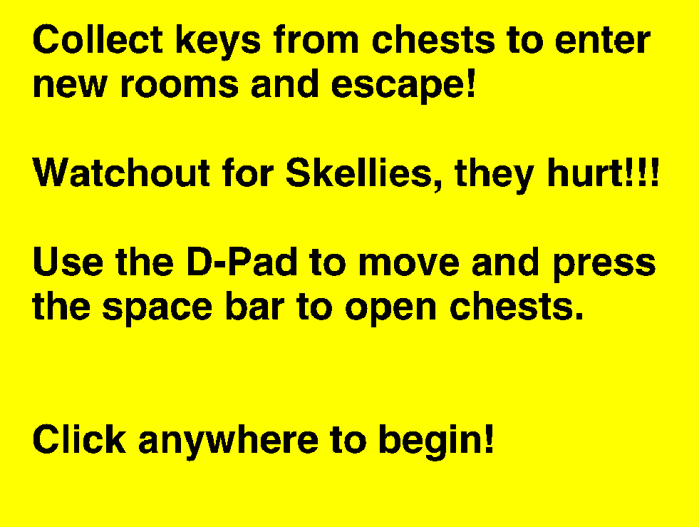
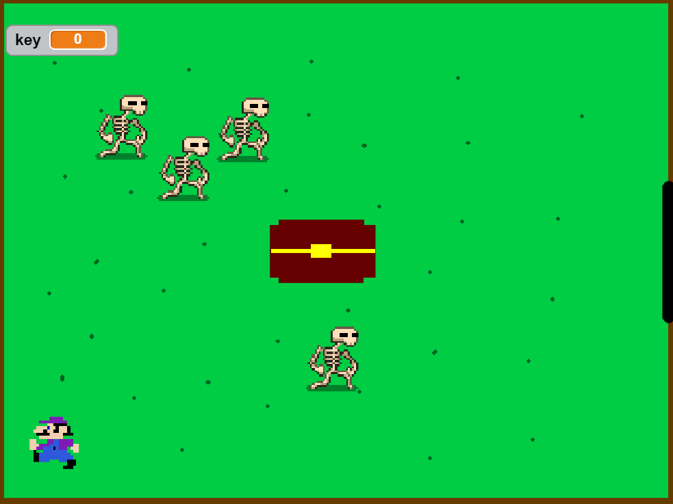

This is my first game made in Scratch, Rush Maze. In the game, you, the player, are trapped in rooms and you need to escape. In order to escape, you must collect a key from the chest and use it to open the black door, but beware, the Skellies will stop you no matter the cost!
Here is a screenshot of the starting menu.
This is the first level of the game!
